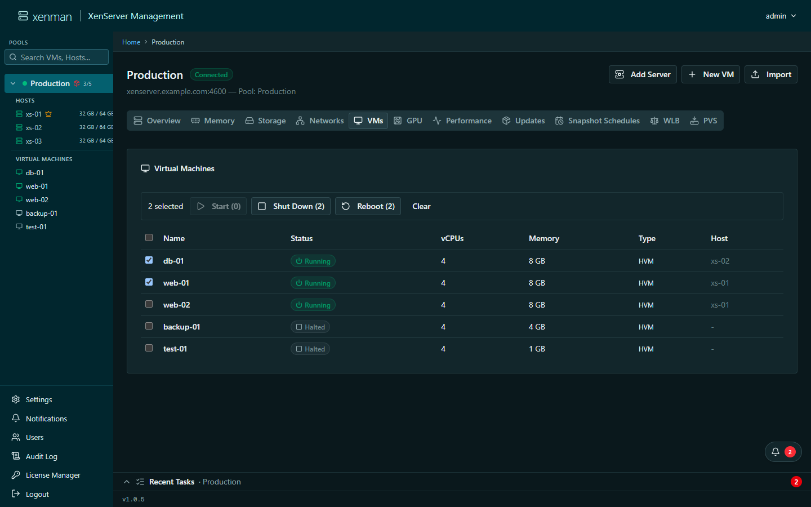
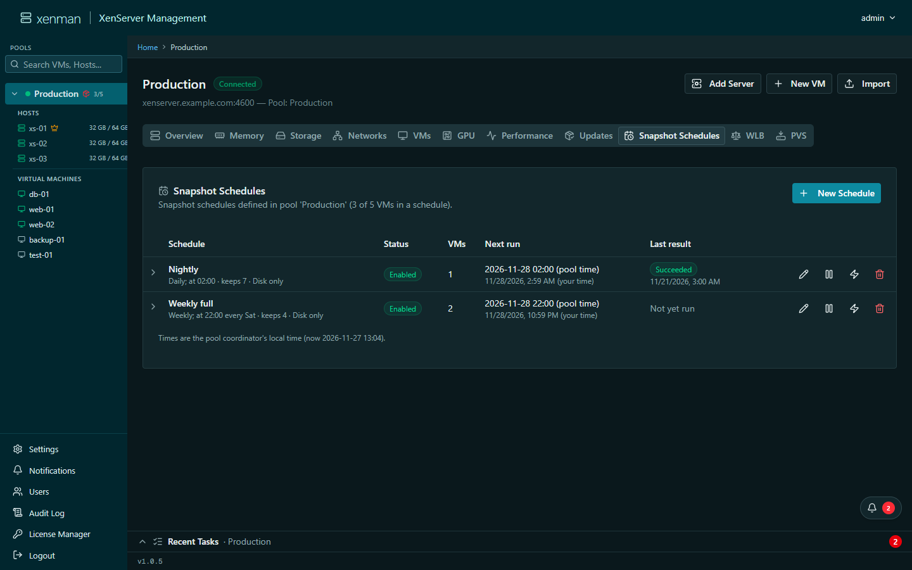
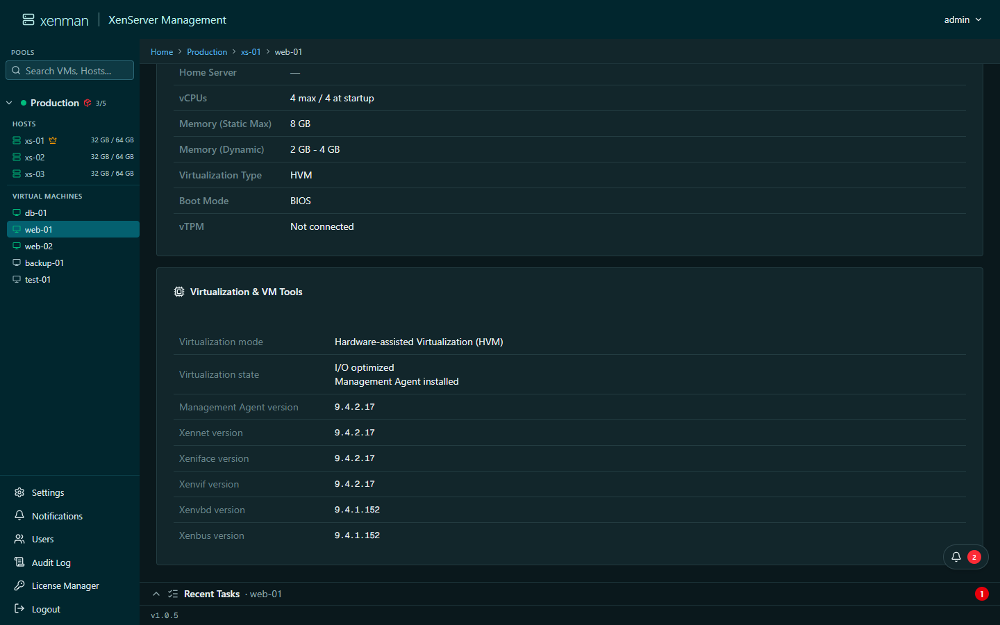

Manage VMs
This article describes common VM tasks in XenMan. Operators and administrators can perform them. Viewers can see VMs but cannot change them.
Open the console
To open a VM's console, select the VM and select Console. The console opens in the browser and supports keyboard shortcuts such as Ctrl+Alt+Del and pasting text from the clipboard. For Windows VMs, you can also download an RDP file.
Start, shut down or reboot several VMs
To act on several VMs at once:
- Select a pool or a host, then the VMs tab.
- Select the check boxes of the VMs, or the check box in the header for all VMs.
- Select Start, Shut Down or Reboot. The buttons show how many of the selected VMs the action applies to.
- Confirm the action. For a shutdown, you can select Force shut down.

Snapshot schedules
A snapshot schedule takes snapshots of its VMs hourly, daily or weekly and keeps the most recent 1 to 10. A VM can belong to one schedule only.
To create a snapshot schedule:
- Select the pool, then the Snapshot Schedules tab.
- Select New Schedule.
- Enter a name and select the VMs.
- Select the snapshot type: Disk only snapshot, or Disk and memory snapshot where your license allows it.
- Select the frequency and the time. Times are in the pool coordinator's local time.
- Select how many snapshots to keep.
- Optionally, turn on Take the first snapshots now, then select Create Schedule.

Note: Snapshot schedules require a XenServer license that includes them. Without it, XenMan says so and does not offer the action.
The tab lists each schedule with its VMs, the next run in pool time and your local time, and the result of the last run. Use the buttons of a schedule to edit, disable, run it now or delete it. A VM's Snapshots tab shows the schedule it belongs to.
VM Tools details
The overview of a VM shows the virtualization mode and state, and the versions of the XenServer VM Tools Management Agent and drivers. Use it to check whether a VM runs current tools.
